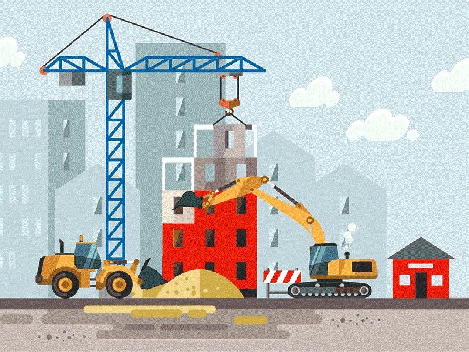

GreatDealBazar
I started selling electrronics products on Ebay on 2008 when I was only 18 years old. I had a great reputation on Ebay with more than 500 positive customer feedbacks. After a while I realized that platforms such as Ebay and Amazon have too much control over sellers' accounts and they always favor customers over sellers, therefore sellers could easily get scammed by some customers. I always had in mind to create my website, but I did not have the knowledge. In 2016-12-26 I have published greatdealbazar to start a side smartphone business, however, I ended up expanding it to more than one product. Greatdealbazar is now a multi products shopping platform with more than 10000 visitors every month. It is a wordpress based website with lots of features such as: Selecting the favorite currency, Credit card and Paypal checkout, Location-based shipping methods, Offering Affiliate marketing and more.
It’s been a year that I am also working on an Ionic framework to publish GreatDealBazar application on both IOS and ANDROID platforms. As of February 2018, I can say it is 95% done, however I need to polish the application and fix some bugs. www.greatdealbazar.com
Challenges
There are a lot of challenges to make a successful business. When I started my website, I had very little information about SEOs and ways of improving website rankings on search engines like Google and Bing. I started to research about SEOs and watched hundreds of video tutorials. According to google ranking, my website is on top 4 pages of google search for specific keywords, it is not on 1st page yet, but I managed to improve it from its original position of 27 to 4.
Another issue for many new websites including mine was the slow speed. My website load time was around 12 seconds which is not a great score. I was losing a lot of customers due to slow page load, I could observe that through high users bounce rate.
Additionally, I ran into many plugin conflicts, so I had to do a lot of debugging and sometimes had to get rid of some of the plugins.
Overcoming Chanllenges
The initial challenges were more about choosing the right domain name, logos and overall look and design of the website. I managed to overcome design related challenges by changing the design of the website multiple times.
I managed to improve my ranking on google by researching a lot about SEOs and also, I called multiple times to google “Adwords” specialists to get advice about google ads.
In addition to google ranking, I improved my website load time using different strategies such as implementing caching programs, Content Delivery networks and optimizing codes and images. Today GreatDealBazar page speed has been improved from 12s to just 2.9s depending on location and iternet connection. I managed to fix the plugin conflicts by editing couple of plugins to customize them for my own needs.
My Role
This was a wordpress-based project. My role in this project ranges from design-based decisions to coding.
I gained a lot of useful information about logo design, customer’s behavior, how to advertise, SEOs and organic searches, Ionic framework, speed improvements, wordpress and its plugins, themes, different businesses and many more.
The project is still on progress and it is not fully done. My future plan for this project is to integrate merchant account instead of payment gateways such as PayPal.
Process
